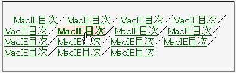

:hover内にpositionやfont-weightなど、特定のプロパティが指定されているa要素が複数行に渡って連続して置かれているとき、a要素にマウスポインタなどが乗るたびにa要素が移動する。
<style type="text/css">
a {
font-weight: normal;
}
a:hover {
font-weight: bold;
}
</style>
<p><a href="../macie.html">MacIE目次</a>／<a href="../macie.html">MacIE目次</a>……</p>
MacIE目次／MacIE目次／MacIE目次／MacIE目次／MacIE目次／MacIE目次／MacIE目次／MacIE目次／MacIE目次／MacIE目次／MacIE目次／MacIE目次／MacIE目次／MacIE目次／MacIE目次
マウスポインタなどが乗ったときは太字で表示させます。上の例示が複数行に渡って表示されていない場合はウィンドウの幅を狭くしてからマウスポインタを乗せたり離したりを繰り返してみてください。
WinIE6.0での表示（標準モード）
:hoverに対して position: relative; left: 0; top:0; と指定するとこのバグを回避できます。この手法を使用できない場合はバックスラッシュハックなどで:hover自体を無視させてください。
<style type="text/css">
a {
font-weight: normal;
}
a.f:hover {
font-weight:bold;
position: relative;
left: 0;
top: 0;
}
</style>
<p><a href="../macie.html" class="f">MacIE目次</a>／……</p>
MacIE目次／MacIE目次／MacIE目次／MacIE目次／MacIE目次／MacIE目次／MacIE目次／MacIE目次／MacIE目次／MacIE目次／MacIE目次／MacIE目次／MacIE目次／MacIE目次／MacIE目次
MacIEで発生する模様。